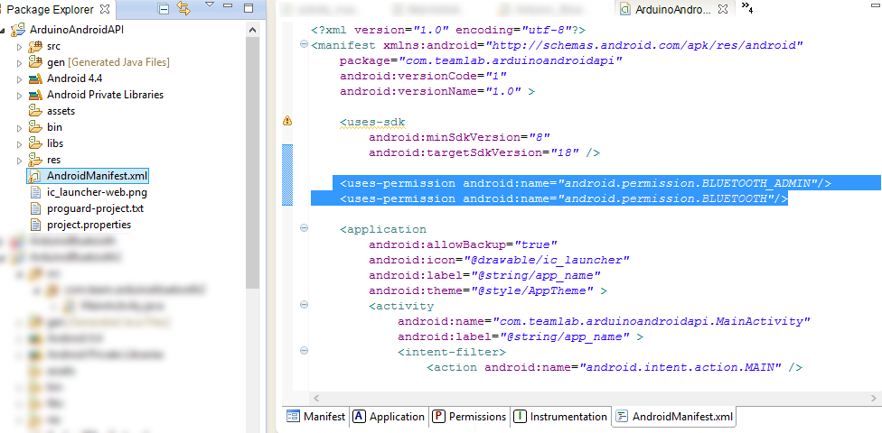
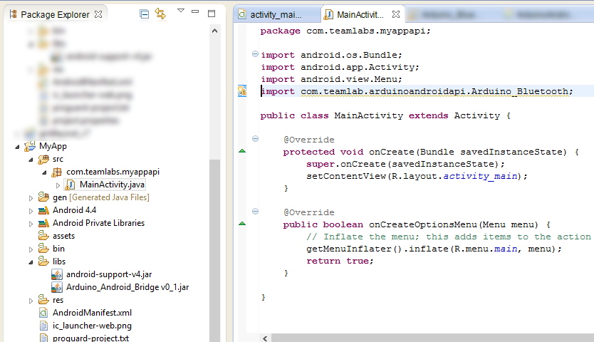

Develop Android applications that connect to devices based on Arduino
For application development will be necessary to use a Java IDE, configured for Android development. We recommend using the ADT Bundle, this is a version of Eclipse already setup for android development.
If you already has a project and want only add the API, go to step 3.
With the Eclipse opened, create a new android project: File > New > Android Application Project
the following window will show up, configure your project as you prefer.
Download the Arduino Android Bridge, give preference to the latest versions.
Extract the file "Android_Arduino_Bridge.zip" and copy the file "Arduino_Android_Bridge.jar" contained in this.
Returning to Eclipse, paste the .jar file in the folder "/libs" of your project, like the image below:
The AndroidManifest.xml is a file present in the root directory of your project, it contains the essential information about your application, that will be read by Android system.
To have us access to the Bluetooth adapter unit is necessary that the application has permission to do so. To add this permission, copy the stretch below to the AndroidManifest.xml of your application:
<uses-permission android:name="android.permission.BLUETOOTH_ADMIN"/>
<uses-permission android:name="android.permission.BLUETOOTH"/>
Você pode editar o .xml diretamente, como mostrado abaixo:
Insert at the beginning of an Activity (or any other .java file that will use the API) the following sentence:
import com.teamlab.arduinoandroidapi.Arduino_Bluetooth;
Initially create a global variable of type Arduino_Bluetooth
Arduino_Bluetooth arduino;
In the onCreate () method of your Activity start your variable, this step is important to check if the android phone has bluetooth adapter:
arduino = new ArduinoBluetooth();
The API still does not have internal methods for pairing with devices, so it is necessary that the user make the pairing manually.
At the moment you want to start a connection, either when the user presses a button or the beginning of an activity, simply the following line:
arduino.Begin("nome do módulo Bluetooth");
For example, using the JY-MCU module, which has a default name "linvor" would initiate the connection in this way:
arduino.Begin("linvor");
If the device name is not constant, the API provides methods list of paired devices so that the user can choose which device you want to connect.
We tried to keep the methods of receiving and sending data similar to a serial communication held by Arduino. Thus, to read the received data and send data just follow the commands below:
Receiving:
String leitura = arduino.Read();
Or, if you want continuous-reading, (using Threads or Runnables) in which reading is updated only when new data is received:
if(arduino.Available()>0){
leitura= arduino.Read();
}
Envio:
arduino.Write("Hello World");
With content until the item 8 is now possible to develop applications to connect to arduino, but it is strongly recommended that, whenever possible, test the connection with the arduino device.
In the current version of the API (0.2) are the following connection states:
ConnectionState.IMPOSSIBLE_CONNECTION-> When the device don't has a bluetooth adapter;
ConnectionState.WAITING_DEVICE->The android device has bluetooth and Arduino_Bluetooth object has already been constructed;
ConnectionState.WAITING_DATA->A connection has been established but not yet received by data;
ConnectionState.RECEIVING_DATA->There is data exchange, it is now safe to conduct the reading / sending data;
ConnectionState.ABORTED-> If an internal API error or connection occurs.
At the end of its activity the closing bluetooth socket is required, ie, the onDestroy () method of your activity insert:
arduino.CloseConnetion();
For more information about the operation of the API access:
Download of basic project (eclipse): (soon)